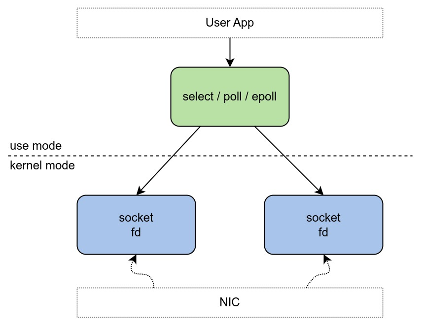
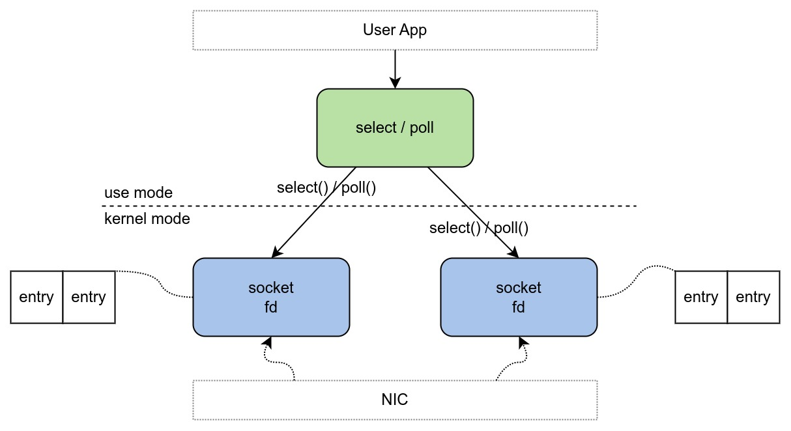
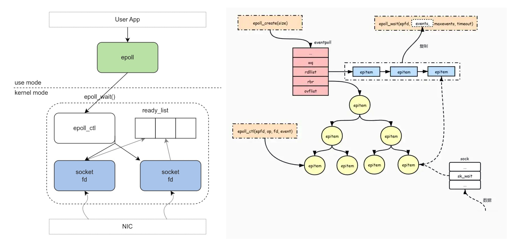

Ch01-Select/Poll/Epoll
August 1, 2021
Select Poll Epoll
1. 基本说明 #
select，poll，epoll 是用来实现多路复用的，即一个线程利用它们即可 hold 诸多个 socket。
| IO 模型 | 相对性能 | 关键思路 | 底层实现 | IO 效率 | fd 拷贝 |
|---|---|---|---|---|---|
| select | 较高 | Reactor | 数组 | O(n) | 每次调用都需要把 fd 集合从用户态拷贝到内核态 |
| poll | 较高 | Reactor | 链表 | O(n) | 每次调用都需要把 fd 集合从用户态拷贝到内核态 |
| epoll | 高 | Reactor/Proactor | 哈希表 | O(1) | 调用 epoll_ctl 时拷贝进内核并保存，之后调用 epoll_wait 不拷贝 |
| kqueue | 高 | Proactor |
2. 原理介绍 #

2.1 Select #

调用 select 会把所有要管理的 socket 的 fd（简单理解就是通过 fd 能找到这个 socket）传到内核中。 此时，需要遍历所有 socket，看看是否有感兴趣的事件发生。
- 如果遍历后发现没有一个 socket 有事件发生，那么 select 线程就需要让出 cpu 阻塞等待，这个等待可以是不设置超时时间的死等，也可以是设置 timeout 的有超时时间的等待。
- 如果遍历后发现有 socket 事件发生，那么 select 线程就会从 socket 获取数据并进行业务处理。
前面说到，如果没有 socket 发生事件，会被阻塞挂起，那么事件到来的时候，又是如何唤醒的呢？事实上每个 socket 有个属于自己的睡眠队列，select 会在自己管理的 socket 睡眠队列里面塞入一个与自己相关的 entry，OS 调用 entry 设置的 callback 方法就能唤醒 select。于是当数据到达 socket 的时候，NIC 通过中断调用到 entry，进而触发对应的 select。
1024 限制指的是 select 管理的 fd 使用数组实现，且该数组长度为 1024。所以导致 select 最多只能控制 1024 个 socket，或者说 select 允许的最大连接数是 1024。
2.2 Poll #
poll 与 select 基本原理类似，只是管理 fd 的数据结构不一致。
poll 管理的 fd 使用单链表实现，无长度限制。所以说 poll 允许的最大连接数没有限制。
2.3 Epoll #

回顾下 select/poll 缺点，epoll 主要就是基于下面两点做了优化。
- 为什么每次 select 需要把监控的 fds 传输到内核里？不能在内核里维护个？
- 为什么 socket 只唤醒 select，不能告诉它是哪个 socket 来数据了？
epoll 搞了个叫 epoll_ctl 的方法，这方法就是用来管理维护 epoll 所监控的哪些 socket。这样在内核里面就维护了此 epoll 管理的 socket 集合，不用每次调用的时候都得把所有管理的 fds 拷贝到内核了。（这个 socket 集合是用红黑树实现的）。同时还引入了一个 ready_list 双向链表，当数据来的时候，callback 里面会把当前的 socket 加入到 ready_list，这样被唤醒的 epoll 只需要遍历 ready_list 即可（这个链表里一定是有数据可读的 socket，相比于 select 就不会做无用的遍历了)。
收集到的可读的 fd 按理是要拷贝到用户空间的，这里又做了个优化，利用了 mmp，让用户空间和内核空间映射到同一块内存中，这样就避免了拷贝。